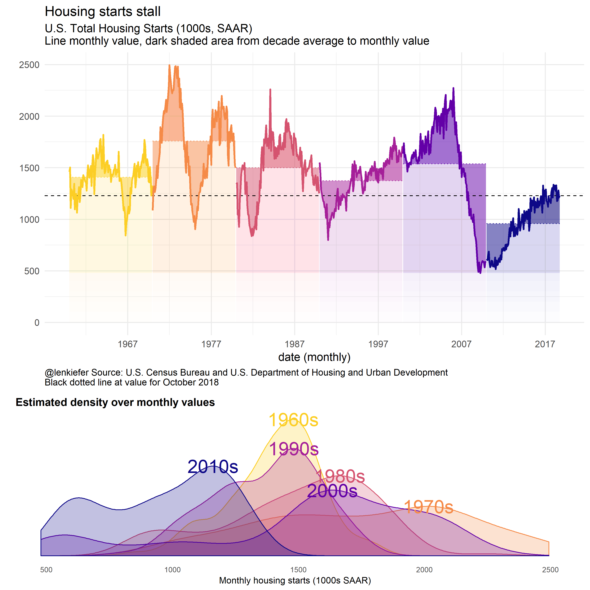

U.S. housing markets have slowed down in 2018. Housing construction, which is still running well below both historical averages and what the U.S. currently needs to meet rising demand has stalled out this year.
The current level of housing construction is close to the level we’ve seen in recession periods. And the historical comparison stretching back decades is comparing a nation with significantly fewer households. Total U.S. households for example, in 1970 were about 1/2 (63 million) of what they were in 2017 (126 million) FRED chart.
Consider the graphic below.

The top panel charts the monthly trend housing starts. The shaded area compares the monthly value to the decade average (an arbitrary number, but a sense of recent values). The chart reveals that housing starts in the most recent decade are well below historical averages.
The curve at the bottom shows the estimated density over monthly values by decades. Again, we can see that the most recent decade is an outlier on the low side.
R code for this plot (including data wrangling) is below the fold. This presumes you have downloaded the .csv file ReSCONST-mf.csv that you can get from the U.S. Census Bureau here. Note that the specific row numbers will change as Census updates data and add data points, this code is specific for data through October 2018 data. See comments in code for how to adjust if you are in the future reading this on your jetpack.
See post for more discussion of the data.
Click for R code: data wrangling
library(data.table)
library(tidyverse)
# load residential construction data
# https://www.census.gov/econ/currentdata/dbsearch?program=RESCONST
# data frame with all residential construction
dt <- fread(paste0("data/RESCONST-mf.csv"), skip=766)
(dt_cat <- fread(paste0("data/RESCONST-mf.csv"), skip=1,nrows=8))## cat_idx cat_code
## 1: 1 APERMITS
## 2: 2 PERMITS
## 3: 3 AUTHNOTSTD
## 4: 4 ASTARTS
## 5: 5 STARTS
## 6: 6 UNDERCONST
## 7: 7 ACOMPLETIONS
## 8: 8 COMPLETIONS
## cat_desc
## 1: Annual Rate for Housing Units Authorized in Permit-Issuing Places
## 2: Housing Units Authorized in Permit-Issuing Places
## 3: Housing Units Authorized But Not Started
## 4: Annual Rate for Housing Units Started
## 5: Housing Units Started
## 6: Housing Units Under Construction
## 7: Annual Rate for Housing Units Completed
## 8: Housing Units Completed
## cat_indent
## 1: 0
## 2: 0
## 3: 0
## 4: 0
## 5: 0
## 6: 0
## 7: 0
## 8: 0(dt_dt <- fread(paste0("data/RESCONST-mf.csv"), skip=13,nrows=3))## dt_idx dt_code dt_desc dt_unit
## 1: 1 TOTAL Total Units K
## 2: 2 SINGLE Single-family Units K
## 3: 3 MULTI Units in Buildings with 5 Units or More K(dt_et <- fread(paste0("data/RESCONST-mf.csv"), skip=20,nrows=3))## et_idx et_code
## 1: 1 E_TOTAL
## 2: 2 E_SINGLE
## 3: 3 E_MULTI
## et_desc
## 1: Relative Standard Error for Total Units
## 2: Relative Standard Error for Single-family Units
## 3: Relative Standard Error for Units in Buildings with 5 Units or More
## et_unit
## 1: PCT
## 2: PCT
## 3: PCT(dt_geo <- fread(paste0("data/RESCONST-mf.csv"), skip=27,nrows=5))## geo_idx geo_code geo_desc
## 1: 1 US United States
## 2: 2 NE Northeast
## 3: 3 MW Midwest
## 4: 4 SO South
## 5: 5 WE Westdt_per <- fread(paste0("data/RESCONST-mf.csv"), skip=36,nrows=718)[, date:=seq.Date(from=as.Date("1959-01-01"), by="1 month",length.out=718)]
dt <-
merge(dt, dt_cat, by="cat_idx") %>%
merge(dt_dt,by="dt_idx") %>%
left_join(dt_et, by="et_idx") %>%
merge(dt_geo,by="geo_idx") %>%
merge(dt_per,by="per_idx") %>%
data.table()
# create decade variable
dt <- dt[ ,decade:= paste0(year(date) %/% 10, "0s")]
# summarize by decade
dt_decade <- dt [, list(vbar=mean(val,na.rm=T)), by = c("decade","cat_idx","cat_desc","dt_idx","dt_desc","et_idx","geo_idx","geo_code","geo_desc")][
order(geo_idx,dt_idx,cat_idx,decade),
] Click for R code: plots
Make some plots of completions by decade
ggplot(data=dt_decade[dt_idx==1 & cat_idx==7 & geo_idx!=1 & et_idx==0,], aes(x=decade, y=vbar,fill=geo_desc))+
geom_col(position = position_dodge(width = 0.75),width=0.95)+
theme_minimal()+
theme(legend.position="none",
plot.caption=element_text(hjust=0))+
scale_fill_viridis_d(option="C", end=0.85)+ facet_wrap(~geo_desc)+
labs(y="",subtitle="Average annual rate for housing units completed (1000s, SAAR)",
title="U.S. Housing completions in this decade well below historical average",
caption="@lenkiefer Source: U.S. Census Bureau and U.S. Department of Housing and Urban Development")
ggplot(data=dt_decade[dt_idx==1 & cat_idx==7 & geo_idx==1 & et_idx==0,], aes(x=decade, y=vbar,group=geo_desc, color=geo_desc))+
geom_path(size=1.05)+geom_point(shape=21, fill="white",size=4,stroke=2)+
theme_minimal()+
#geom_col(position = position_dodge(width = 0.75),width=0.65)+ #facet_wrap(~geo_desc)+
scale_color_viridis_d(option="C", end=0.85)+ facet_wrap(~geo_desc)+
theme(legend.position="none",
plot.caption=element_text(hjust=0))+
labs(y="",subtitle="Average annual rate for housing units completed (1000s, SAAR)",
caption="@lenkiefer Source: U.S. Census Bureau and U.S. Department of Housing and Urban Development")
ggplot(data=dt_decade[dt_idx==1 & cat_idx==7 & geo_idx!=1 & et_idx==0,], aes(x=decade, y=vbar,group=geo_desc, color=geo_desc))+
geom_path(size=1.05)+geom_point(shape=21, fill="white",size=3,stroke=1.5)+
scale_color_viridis_d(option="C", end=0.85)+ facet_wrap(~geo_desc)+
theme_minimal()+
theme(legend.position="none",
plot.caption=element_text(hjust=0))+
labs(y="",subtitle="Average annual rate for housing units completed (1000s, SAAR)",
caption="@lenkiefer Source: U.S. Census Bureau and U.S. Department of Housing and Urban Development")
And our grand plot. See here for more discussion on the top panel chart construction, and here for the bottom density curve panel.
library(cowplot) # for multiple plots
# See http://lenkiefer.com/2018/07/07/mortgage-rates-in-the-21st-century/
df <- left_join(dt[dt_idx==1 & cat_idx==4 & geo_idx==1 & et_idx==0 & year(date)>1959,],dt_decade, on=c("dt_idx","cat_idx","geo_idx","et_idx"))
myxy2<- function(dd, in.df=df){
x<-filter(in.df,decade==dd)$val
outdf<- data.frame(
x=density(x)$x[which.max(density(x)$y)], #find maximum density (in y dimension)
y=max(density(x)$y,na.rm=T)
)
}
df.text <- data.frame(decade=unique(df$decade)) %>% mutate(xy=map(decade,myxy2)) %>% unnest(xy)
g.dens.plain <-
ggplot(data= df,
aes(x=val, fill=decade,color=decade))+
geom_density(alpha=0.25)+
theme_minimal()+
scale_y_continuous(breaks=NULL,sec.axis=dup_axis())+
theme(legend.position="none",
panel.grid.minor=element_blank(),
panel.grid.major=element_blank(),
plot.title=element_text(face="bold",hjust=0),
plot.caption=element_text(hjust=0))+
geom_text(data=df.text,aes(label=decade, x=x,y=y),size=8)+
scale_color_viridis_d(option="C",end=0.9,direction=-1)+
scale_fill_viridis_d(option="C",end=0.9,direction=-1)+
labs(x="Monthly housing starts (1000s SAAR)",
title="Estimated density over monthly values",y="")
myr0 <- function(x, a=0.02){
geom_ribbon(alpha=a, color=NA, aes(ymin=0,ymax=min(x, val)))
}
myr <- function(x, a=0.02){
geom_ribbon(alpha=a, color=NA, aes(ymin=min(x, val )))
}
g.line<-
ggplot(data=df ,
aes(x=date,y=val, ymax= val , fill=decade,color=decade))+
geom_line()+
geom_ribbon(alpha=0.5, color=NA, aes(ymin=vbar))+
map(c(0,pull(df,val) %>% last()) %>% pretty(12), myr, a=0.01)+
geom_hline(aes(yintercept=last(val)), linetype=2)+
geom_line(aes(y=vbar),linetype=3)+
geom_line(size=1.05)+
theme_minimal(base_size=14) +
theme(legend.position="none",
plot.caption=element_text(hjust=0))+
scale_x_date(date_breaks="10 years",date_labels="%Y")+
labs(x="date (monthly)",
y="", subtitle="U.S. Total Housing Starts (1000s, SAAR)\nLine monthly value, dark shaded area from decade average to monthly value",
title="Housing starts stall",
caption="@lenkiefer Source: U.S. Census Bureau and U.S. Department of Housing and Urban Development\nBlack dotted line at value for October 2018")+
scale_color_viridis_d(option="C",end=0.9,direction=-1)+
scale_fill_viridis_d(option="C",end=0.9,direction=-1)
cowplot::plot_grid(g.line,g.dens.plain,ncol=1,rel_heights=c(3,2))